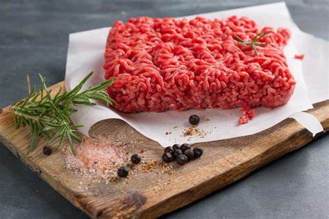

Ingredients
- Ground Beef 
- Taco Shells

- Lettuce
- Cheese

- Tomatoes

Instructions
Brown the Beef: In a skillet, cook ground beef over medium heat until browned. Drain excess fat and season with taco seasoning. Fill Taco Shells: Spoon the seasoned beef into taco shells. Top and Serve: Top with shredded lettuce, grated cheese, diced tomatoes, and your choice of dressing or salsa. Enjoy!